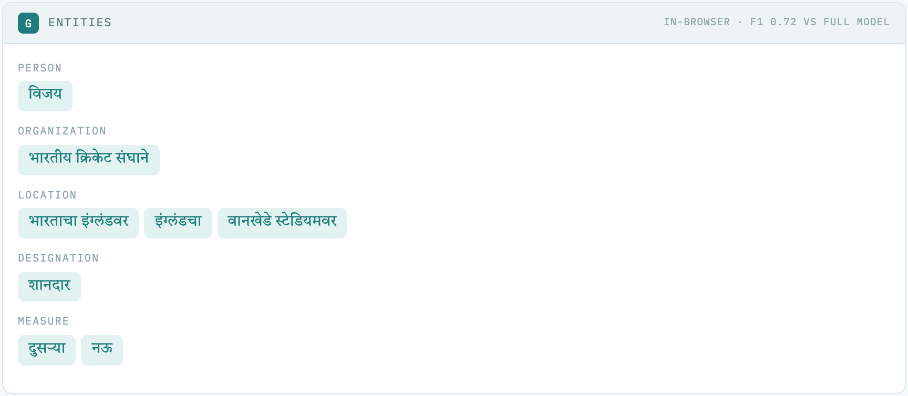
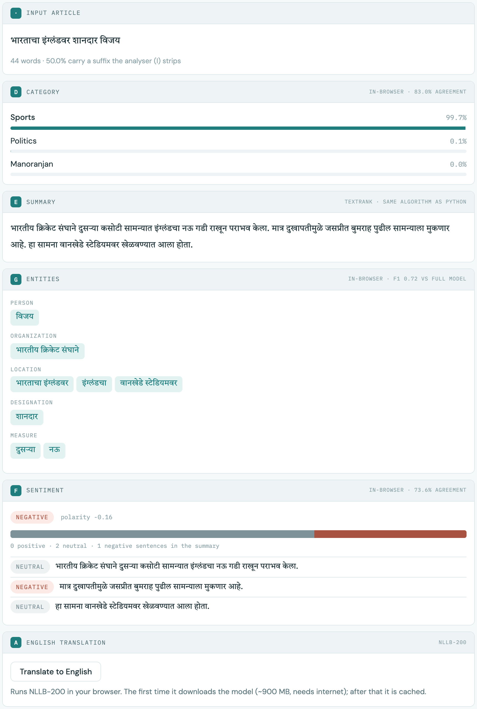

Everything you need to understand the project and explain it confidently in the presentation, in plain language.
We built a system that reads Marathi news articles and understands them automatically. You give it one article, and it tells you:
and it adds the article to a search engine. All of this happens automatically, with no human help.
"Our project is a Marathi news assistant. One article goes in, and out come its topic, a summary, the people and places in it, its tone, and an English translation, and it becomes searchable. The heart of it is a tool we wrote ourselves that understands how Marathi words are built."
Marathi is spoken by more than 83 million people, but it has far fewer computer tools than English. The main difficulty is how Marathi builds words. It is an agglutinative language: where English uses several separate words, Marathi glues extra pieces onto the end of one word.
| Marathi word | Built from | Meaning |
|---|---|---|
| घर | घर | house |
| घरात | घर + आत | in the house |
| घरातून | घर + आतून | from inside the house |
| घरांमधून | घर + ां + मधून | from inside the houses |
| घराच्या | घर + आ + च्या | of the house |
A normal computer program splits text at spaces, so it sees these as five unrelated words. If you search for घर, it misses every article that says घरात or घरांमधून. The same problem hurts summaries, counting names, and anything else that compares words.
How common is this? In our 3,000 articles, 36% of all words carry at least one of these endings.
We wrote a program that removes these endings step by step and finds the root of each word, so all five forms above become घर. We wrote it from scratch using rules; it needed no training data. Because of it, the search index shrinks from 186,593 different words to 84,480, which is 54.7% smaller.
In Devanagari, vowel signs are stored as separate characters, so घरा is 3 characters but only 2 written syllables. Our analyser measures length in syllables, not characters. Before we fixed this, शाळा and शाळेत ended up with different roots. It's a good example of a bug we found and fixed.
The assignment gave a list of NLP tasks with letter codes. Our project does seven of them, connected as one system rather than seven separate programs.
Finds the root of every word by removing its endings in four layers: emphasis words, then postpositions ("from", "in"), then verb endings, then case and plural endings.
Decides the topic of an article out of 12: Politics, Sports, Health, Tech, Crime, International, Education, Entertainment and more. Uses MahaBERT, a Marathi language model.
Picks the 3 most important sentences. TextRank links sentences that share words (using roots), and the most connected sentences win, like the most-cited pages on the web. Then it drops repeats.
Finds names of people, places, organisations, dates, times, quantities and job titles. We fixed two problems: names being cut mid-letter, and one person appearing under several word forms.
Scores each sentence as positive, neutral or negative, then combines them into the tone of the whole article, and the tone around each person mentioned.
Translates Marathi to English with NLLB-200, Meta's translation model. It goes sentence by sentence so long articles stay accurate.
Three search methods over the same articles. BM25 is classic keyword search, but run on roots instead of raw words. Dense search compares meaning, so it can match sentences that share no words. Hybrid combines both result lists by rank (called Reciprocal Rank Fusion), because the two methods' scores are on completely different scales and can't simply be added.
Written by us: the morphological analyser, the BM25 search engine, the TextRank summariser, the ROUGE
scorer, the entity-merging logic, the small in-browser models, and the demo page.
Reused research models: MahaBERT topic, NER and sentiment models (L3Cube, Pune) and NLLB-200 (Meta).
We also fine-tuned MahaBERT ourselves as a topic classifier.
An article flows through the system from top to bottom. The analyser sits at the start because three other parts (search, summary, entities) depend on its roots.
"The analyser is the spine of the system. Everything that compares words (search, summary, entity counting) uses its roots instead of raw words. The five middle tasks each add one kind of understanding, and at the end everything becomes searchable."
| Dataset | Size | What we used it for |
|---|---|---|
| XL-Sum Marathi (BBC Marathi) | 13,627 articles | The news collection, and human-written summaries to score our summariser against. We processed 3,000 articles. |
| MahaNews | 11,721 headlines | Training and testing our fine-tuned topic classifier. |
| Live RSS feeds | 3 websites | Running the pipeline on today's news: BBC Marathi, ABP Majha, Lokmat. |
| Job | Model | From |
|---|---|---|
| Topic (12 classes) | marathi-topic-all-doc | L3Cube, Pune |
| Entities (8 types) | marathi-ner | L3Cube, Pune |
| Sentiment | marathi-sentiment-md | L3Cube, Pune |
| Meaning search | marathi-sentence-similarity-sbert | L3Cube, Pune |
| Our fine-tuning base | marathi-bert-v2 | L3Cube, Pune |
| Translation | nllb-200-distilled-600M | Meta AI |
All of it runs on an ordinary laptop: an NVIDIA GPU, an Apple Silicon Mac, or even CPU only. Processing the 3,000 articles took about 3 minutes on a laptop GPU.
We tested every part against a simple baseline, so any improvement we claim is real and not assumed. Where the result was disappointing, we report that too.
How we tested: use each article's headline as the search query and check whether the right article comes back. Headlines were removed from the searchable text, so it can't just match the exact title.
| Search method | Found 1st | In top 5 | In top 10 | MRR@10 |
|---|---|---|---|---|
| BM25, plain words | 0.600 | 0.770 | 0.817 | 0.675 |
| BM25 + our analyser | 0.623 | 0.810 | 0.830 | 0.702 |
| Meaning search (dense) | 0.420 | 0.653 | 0.733 | 0.527 |
| Hybrid (both combined) | 0.550 | 0.783 | 0.873 | 0.651 |
"Found 1st" = how often the right article is the first result. MRR is an overall ranking score from 0 to 1. The analyser improves ranking by 3.9%: real, but modest.
With short searches of one or two words (the way people actually search), the analyser gives no improvement, and is even very slightly worse (score 0.212 → 0.202 for one-word searches). Two reasons: the query word usually also appears in the article in the same form, so there's nothing to fix; and removing endings sometimes merges genuinely different words.
In 67.8% of articles, at least one headline word appears in the text only in a different form. For those searches, plain search returns a completely empty page 14.4% of the time; with our analyser only 1.1%. So the analyser's real value is stopping searches from coming back empty, not better ranking.
We compared our summaries with human-written ones using ROUGE (how many words overlap), on 300 articles. The baseline is simply "take the first 2 sentences".
| Method | ROUGE-1 | ROUGE-2 | ROUGE-L |
|---|---|---|---|
| First 2 sentences (baseline) | 0.1045 | 0.0192 | 0.0817 |
| Same, scored on roots | 0.1566 | 0.0300 | 0.1199 |
| Our TextRank | 0.0981 | 0.0184 | 0.0757 |
| Our TextRank, scored on roots | 0.1588 | 0.0296 | 0.1154 |
For news that's expected: journalists put the key facts in the first sentences. We included the baseline so the comparison is honest. The more useful finding: scoring on roots raises every method by about 50%, because शाळेत and शाळांमध्ये otherwise count as a mismatch. This is a finding about how summaries should be scored in Marathi.
| Model | Accuracy | Macro-F1 |
|---|---|---|
| Ready-made 12-topic model, mapped to 3 topics | 0.8467 | 0.7994 |
| MahaBERT fine-tuned by us (3 topics) | 0.9536 | 0.9380 |
Our fine-tuned model scores higher because it answers an easier question: only 3 topics (entertainment, sports, state) instead of 12. Using it would lump Politics, Tech, Health and Crime into one label and make the whole system worse. A higher score on a simpler task is not a better component.
For the demo page we trained small models to copy the big ones (explained in section 7). We checked how often they agree with the big models on 1,362 articles they never saw:
| Task | Agreement with the big model |
|---|---|
| Topic | 83.0% |
| Sentiment, per sentence / per article | 75.7% / 73.6% |
| Entities (F1 score) | 0.72 |
The demo is a single web page (Marathi-NLP-Demo.html) that runs in any browser with no
installation. You can paste any Marathi text into any of its three tabs. The question is how it can run
huge AI models inside a web page. The answer is different for each part:
| Part | How it runs in the page |
|---|---|
| I · Analyser, C · Search, E · Summary | The exact same methods as our Python code, rewritten in JavaScript. We checked on 1,000 articles that the page gives identical results to Python. |
| D · Topic, F · Sentiment, G · Entities | The real models are ~700 MB each, too big for a web page. So we trained small "student" models to copy them: we ran the big models over 13,600 articles, then taught small models to give the same answers. They agree 72–83% of the time, and the page shows these numbers next to each result. |
| A · Translation | The real NLLB-200 model, downloaded into the browser the first time (~900 MB), then kept. |
If you run python app/server.py on the laptop, the page notices it and sends text to the
real, full models instead. A badge next to the Analyse button shows which mode is active.
This is the best way to show the most accurate results.

The comparison above is a good one to show: the student wrongly thinks विजय ("victory") is a name, while the full model correctly finds जसप्रीत बुमराह. It explains why we show the agreement numbers.
"Search, summaries and word analysis run exactly as in our Python code. For topic, tone and names, the real models are 700 MB each, so we trained small copies of them that run in the browser, and we measured and show how often they agree. With our local server running, the page uses the real models instead."
Notes follow your 15-slide deck. Aim for about 10 minutes of slides and 5 minutes of demo.
| Slide | What to say |
|---|---|
| 1 · Title | Introduce the team and the project name. "Our project teaches a computer to read Marathi news." |
| 2 · Outline | "We'll cover the problem, how our system works, what we measured, and its limits. Then a live demo." |
| 3 · Introduction | 83 million speakers but few tools. Marathi glues endings onto words, so English tools fail. Read out the घर chain: "a normal program sees five unrelated words." |
| 4 · Objectives | Six goals: our own analyser with no training data; a search engine where we can measure the analyser's real effect; seven tasks in one pipeline; a fine-tuned classifier; everything tested against a baseline; a usable demo. |
| 5 · Background | Walk through the table: each row adds an ending. "Our analyser removes endings in four layers and then repairs the root. It counts syllables, not characters. That fixed a real bug." |
| 6 · Methodology | Follow the diagram top to bottom: article → analyser → five tasks → search → two interfaces. "The analyser comes first because search, summary and entities all use its roots." |
| 7 · Results | Read the numbers: 7 tasks, 3,000 articles, 54.7% smaller index, 95.4% classifier accuracy. Note: the slide says 44 tests; there are now 51 fast tests (59 including the model tests). |
| 8 · Search results | "With our analyser, the right article comes first 62% of the time instead of 60%. That's a 3.9% ranking gain, honestly modest. The real value: court (न्यायालय) finds 1 article without it and 14 with it, and empty result pages drop from 14.4% to 1.1%." Good moment to switch to the live demo. |
| 9 · Applications | News search and archives, media monitoring, government portals, English access to Marathi news, and the same method for other Indian languages like Hindi and Konkani. |
| 10 · Advantages | No training data for the analyser; every claim tested against a baseline; runs on a laptop; a single-file demo that needs no installation and works on any pasted text. |
| 11 · Limitations | Read them honestly (section 8). Volunteering weaknesses first makes the project look like real research. |
| 12 · Future scope | Live news already works. Next: a dictionary check for roots, summaries written by a model, better name boundaries, and news sources beyond BBC. |
| 13 · Conclusion | "Seven tasks around one analyser we built from scratch. Its real contribution is recall: searches stop coming back empty." |
| 14 · References | Mention that the models come from L3Cube Pune and Meta, and TextRank and BM25 are classic published methods. |
| 15 · Thank you | Invite questions (section 11). |
| Presenter 1 | Slides 1–4: the problem and goals |
| Presenter 2 | Slides 5–6: how the analyser and pipeline work |
| Presenter 3 | Slides 7–8 and the live demo |
| Presenter 4 | Slides 9–15: uses, limits, future, conclusion, questions |
About five minutes. Open Marathi-NLP-Demo.html before you start (see the User Manual's checklist).
The word घरांमधून is already loaded. Point at the coloured blocks. Then clear the box and type a Marathi word the audience suggests. Finally paste a whole sentence to show the table.
"This one word means 'from inside the houses'. Our analyser splits it into the root घर, a plural marker and 'from'. You can type any word, it's running live, not a picture."
"Same query, same 400 articles. Without our analyser: one result. With it: fourteen. The other thirteen say 'court' in a different grammatical form."
"But for 'rain' it makes no difference: the articles use the exact same form. That's why our measured ranking gain is only about four percent. The real value is that searches stop coming back empty: from 14% to 1%."
Showing where it does not help, before anyone asks, is what makes the result believable.
"This article came from today's news, so nothing is prepared in advance. It's categorised, summarised to the three key sentences, the names and places are pulled out automatically, the tone is scored sentence by sentence, and it's translated to English."
"The small labels tell you which model produced each result and how accurate it is. We measured that honestly too."

Both. The analyser is written entirely by us, with rules and no training data. We fine-tuned MahaBERT as a topic classifier and reached 95.4% accuracy, up from 84.7%. We also trained the small in-browser models ourselves. The entity, sentiment and translation models are published research models from L3Cube and Meta.
Because it answers an easier question: 3 topics instead of 12. Using it would merge Politics, Tech and Health into one label. A higher number on a simpler task is not a better component.
Less than we first expected, and we measured it three ways instead of reporting only the best one. Ranking improves about 4%, short searches not at all. Its real value is cutting empty searches from 14.4% to 1.1%, and halving the index size.
No, and we report that. News puts the key facts first, so the first sentences are a strong baseline (0.105 vs our 0.098 ROUGE-1). The interesting finding is that scoring on roots raises every method by about 50%.
For word analysis, search and summaries: yes, the same methods, checked on 1,000 articles with zero differences. For topic, sentiment and entities the real models are 700 MB each, so the page uses small copies we trained, which agree 72–83% of the time. The page shows those numbers. With our local server running, it uses the real models.
Over-stripping (नदी and नद्या both become नद); neighbouring names can merge; summaries only pick sentences; all articles are from BBC Marathi so topics and tone are skewed; the in-browser models are approximations.
Yes. You can paste any article into the demo. The Python version can also fetch live articles from BBC Marathi, ABP Majha and Lokmat and run the whole pipeline on them (the Analyse tab of the Streamlit dashboard).
BM25 is the standard keyword-search formula: a result scores higher if it contains the query words often, especially rare words, adjusted for article length. TextRank ranks sentences the way Google's PageRank ranks web pages: a sentence is important if many other sentences are similar to it.
59 automated tests check the analyser's rules, the search ranking, the summariser, the scoring and the entity merging. Two of them guard against bugs we found during development. A separate check confirms the web page gives the same answers as Python.
| 7 | NLP tasks: I, D, E, G, F, A, C |
| 83 million | Marathi speakers |
| 3,000 | articles processed (from 13,627 in XL-Sum) |
| 36% | of words carry an ending the analyser removes |
| 54.7% | smaller search index (186,593 → 84,480 words) |
| +3.9% | better search ranking with the analyser (MRR 0.675 → 0.702) |
| 14.4% → 1.1% | empty search pages, without vs. with the analyser |
| 1 → 14 | results for न्यायालय (court), without vs. with |
| 95.4% | our fine-tuned classifier's accuracy (vs. 84.7%) |
| 83% · 74% · 0.72 | in-browser models' agreement: topic · article tone · entities (F1) |
| 59 | automated tests (51 fast + 8 that load the models) |
| Agglutinative | A language that builds meaning by gluing endings onto words, like Marathi. |
| Root / stem | The basic part of a word after removing endings (घर in घरात). |
| Baseline | A simple method you compare against, to prove your method adds something. |
| MahaBERT | A large AI language model trained on Marathi text by L3Cube, Pune. |
| Fine-tuning | Training an existing model a little more on your own task. |
| MRR | A search score: 1.0 if the right answer is always first, lower if it's further down. |
| ROUGE | A summary score: how many words a summary shares with a human-written one. |
| F1 score | Combines "how many found items are right" and "how many right items were found". 1.0 is perfect. |
| Student model | A small model trained to copy a big model's answers, so it can run somewhere small, like a web page. |
python scripts/evaluate.py --task all